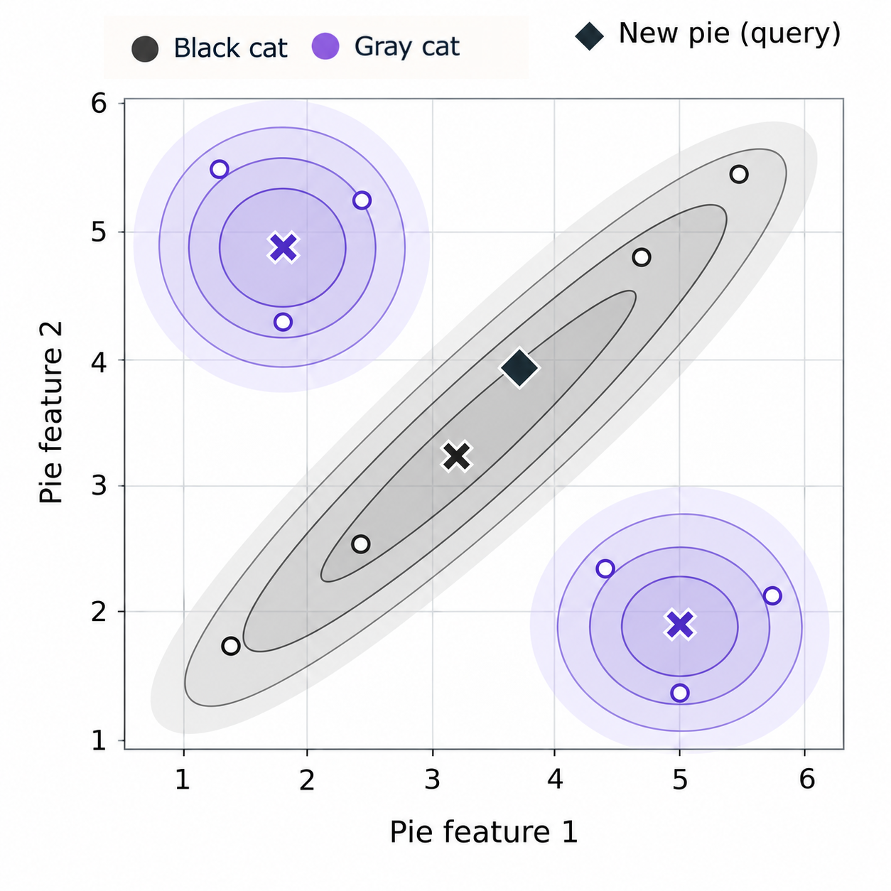

CLUSTER-BASED ACCOUNTiGMM
An infinite Gaussian mixture model represents observations using a flexible set of clusters. This offers a way to ask how learners organise examples into latent groups.
Research lens How might the order of examples shape learned category structure?